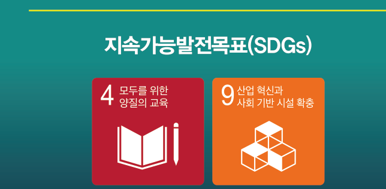
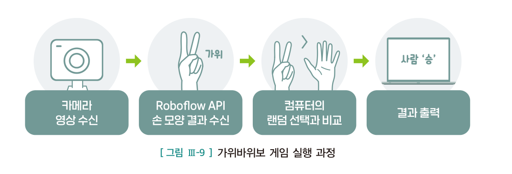
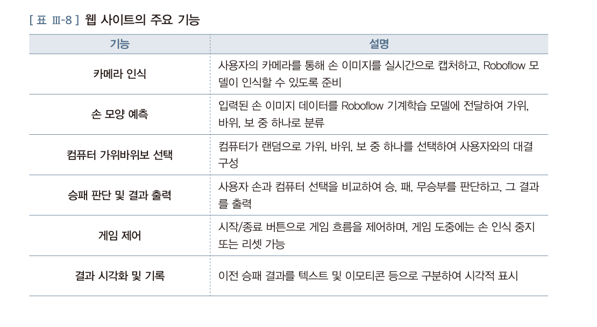
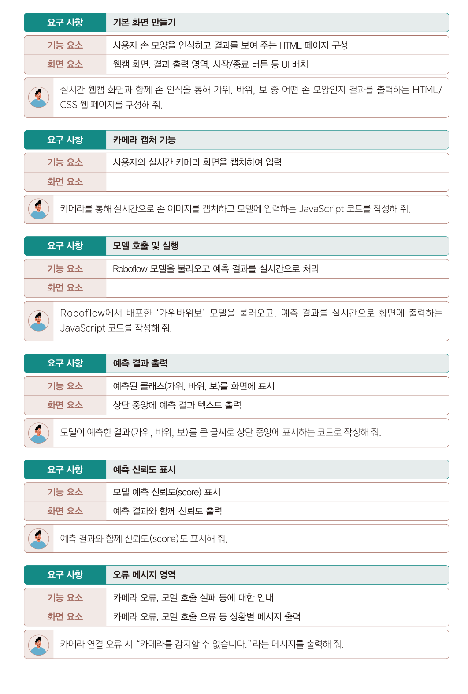
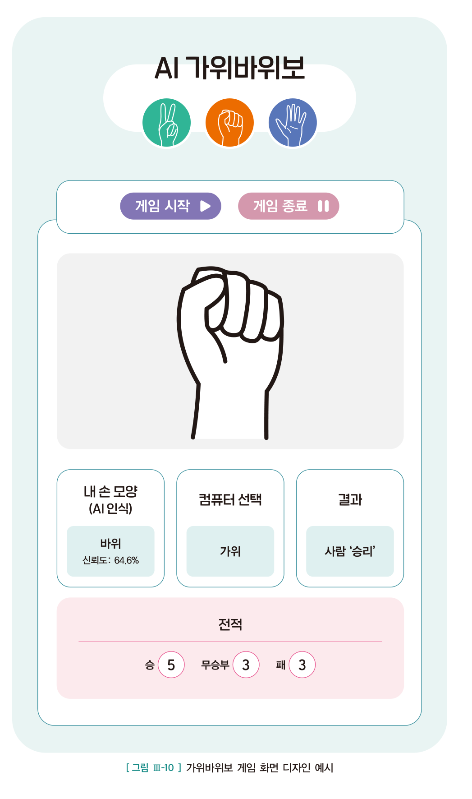
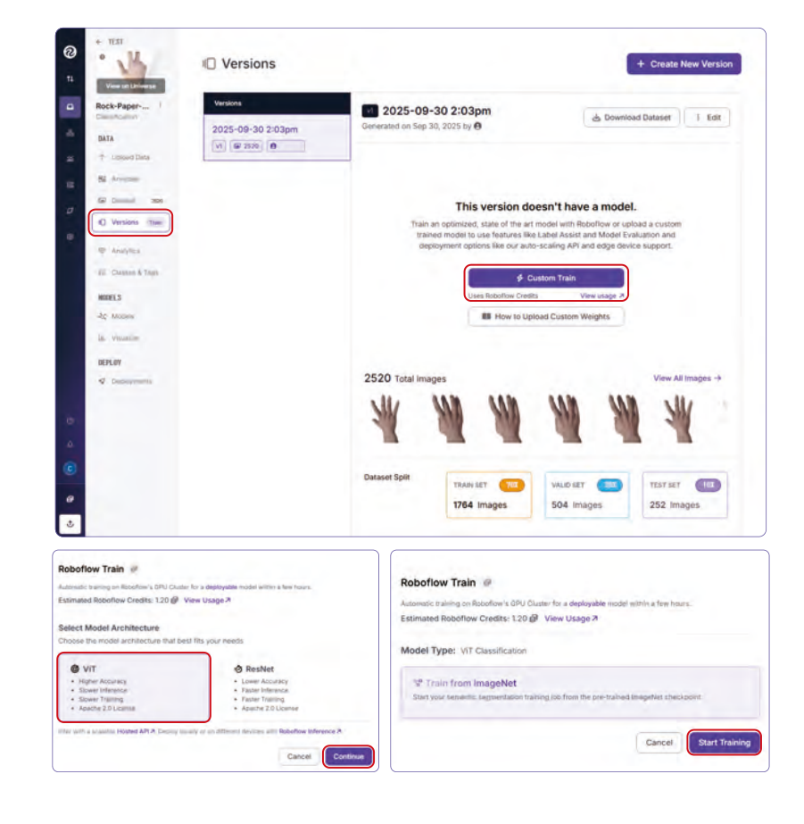
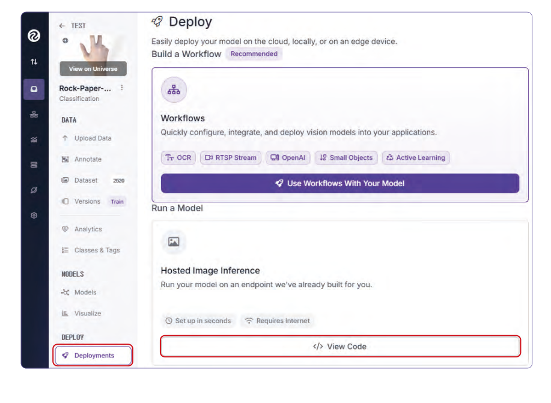

<!DOCTYPE html><html lang="ko"><head><meta charset="utf-8"><meta name="viewport" content="width=device-width,initial-scale=1">
<title>11회차 · 가위바위보 게임 · GitHub · 발표 준비</title>
<link rel="stylesheet" href="style.css?v=12">
<style>
/* 11회차 전용 — 발표 타임라인 · 제출물 점검 · README 만들기 */
.tl3{display:grid;gap:8px;margin:16px 0}
.tl3 .row3{display:grid;grid-template-columns:78px 1fr;gap:13px;align-items:start;border-left:2px solid var(--line2);padding:11px 0 11px 15px}
.tl3 .row3.hi3{border-left-color:var(--accent);background:rgba(216,180,90,.05)}
.tl3 .tm3{font-family:var(--mono);font-size:12px;color:var(--accent);font-weight:700;padding-top:1px}
.tl3 .ct3{font-size:13px;color:var(--mut);line-height:1.7}
.tl3 .ct3 b{color:var(--tx)}
.chk2{display:grid;gap:7px;margin:14px 0}
.chk2 label{display:flex;gap:11px;align-items:flex-start;font-size:13px;color:var(--mut);border:1px solid var(--line);
 border-radius:3px;padding:11px 14px;cursor:pointer;line-height:1.7;transition:.14s}
.chk2 label:hover{border-color:var(--line2)}
.chk2 input{margin:3px 0 0;width:16px;height:16px;accent-color:#d8b45a;flex-shrink:0}
.chk2 input:checked+span{color:var(--tx)}
.chk2 .grp{font-size:10.5px;letter-spacing:.14em;text-transform:uppercase;color:var(--dim);font-weight:700;margin:14px 0 4px}
.subbar{height:10px;background:rgba(255,255,255,.05);border-radius:5px;overflow:hidden;margin:14px 0 6px}
.subbar i{display:block;height:100%;background:linear-gradient(90deg,#8bc0a4,#a9d4c0);transition:width .3s}
.rd{border:1px solid var(--line);border-radius:4px;background:var(--ink2);padding:20px;margin:16px 0}
.rd label{display:block;font-size:12.5px;font-weight:700;color:var(--tx);margin-top:12px}
.rd input,.rd textarea{width:100%;background:rgba(255,255,255,.04);border:1px solid var(--line);border-radius:3px;
 color:var(--tx);padding:9px 11px;font-size:13px;font-family:var(--sans);margin-top:5px;line-height:1.7;resize:vertical}
.rd .out3{margin-top:16px;background:#0a0b10;border:1px solid var(--line);border-radius:3px;padding:14px 16px;
 font-family:var(--mono);font-size:12px;line-height:1.85;color:#d8dae4;white-space:pre-wrap;overflow-x:auto}
</style></head><body>

<div class="lhead" id="lhead"></div>
<div class="bnav" id="bnav"></div>
<div id="blocks"></div>
<div id="timer"></div>

<footer><div class="wrap-n">
  2026-2 온라인 공동교육과정 · 인공지능 융합프로젝트 — 대전대신고등학교 하진수<br>
  교과서 Ⅲ. 융합 프로젝트 구현 <b>148~157쪽</b> + 발표 준비 ·
  <a href="index.html" style="color:var(--accent)">운영실 메인</a> ·
  <a href="lesson10.html" style="color:var(--accent)">← 이전 회차</a> ·
  <button class="tbtn ghost" style="margin-left:6px" onclick="resetLesson()">이 회차 기록 초기화</button>
</div></footer>

<script>
const LESSON={
n:11,date:"2026.11.16",dow:"월",time:"17:00~21:00",ch:"41~44차시",mode:"원격 수업",
title:"가위바위보 게임 · GitHub · 발표 준비",
goals:[
 "손 모양 이미지를 활용해 기계학습 모델을 만들 수 있다.",
 "학습된 모델을 웹과 연동하여 실시간 가위바위보 게임을 구현할 수 있다.",
 "산출물을 저장소에 정리하고 성과공유회 발표를 준비할 수 있다."],
breaks:[{after:3,mins:10},{after:4,mins:10}],
blocks:[

/* ============ 0. 도입 ============ */
{kind:"open",nav:"도입",mins:10,title:"내일이 성과공유회입니다",
 sub:"오늘은 <b>마지막 원격 수업</b>입니다. 새 프로젝트를 하나 더 배우고, 그동안의 결과물을 정리합니다.",
 sections:[
 {n:"01",h:"오늘의 위치",
  html:`<div class="hook"><div class="hk">Last online session</div>
   <div class="hq">내일 이 시간, 여러분은<br>융합과학실에서 <em style="color:var(--accent);font-style:normal">발표</em>합니다.</div>
   <p>8월 17일에 &ldquo;오늘 아침 당신을 읽어 간 기계는 몇 개일까&rdquo;로 시작한 강좌가 <b>오늘로 열한 번째</b>입니다.
   그동안 데이터를 모으고, 모델을 학습시키고, 게임을 만들었습니다.
   <br><br>오늘은 <b>세 가지</b>를 합니다 — 마지막 프로젝트(가위바위보 AI)를 살펴보고,
   <b>GitHub에 산출물을 정리</b>하고, <b>내일 발표를 준비</b>합니다.</p></div>
   <div class="box warn"><b class="t">오늘 반드시 끝내야 할 것</b>
   <ul>
    <li><b>GitHub 저장소</b> — 코드와 README가 올라가 있어야 합니다</li>
    <li><b>발표 자료</b> — 5분 시연 구성과 슬라이드</li>
    <li><b>백업 영상</b> — 장치가 안 돌아갈 때를 대비한 시연 녹화</li>
   </ul>
   내일은 <b>발표만</b> 합니다. 준비는 오늘이 마지막입니다.</div>`},
 {n:"02",h:"출결과 준비 확인",
  html:`<div class="box"><b>확인해 주세요</b>
   <ul>
    <li>카메라를 켜고 이름을 <b>학교명_이름</b> 형식으로 바꿔 주세요.</li>
    <li>교과서 <b>148~157쪽</b>을 펴 두세요. Ⅲ단원 <b>3. 인공지능 가위바위보 게임 프로젝트</b>입니다.</li>
    <li><b>GitHub 계정</b>을 만들어 오셨나요? 아직이면 지금 만드세요 (github.com).</li>
    <li>10회차에 만든 <b>.py 파일</b>과 <b>보고서</b>, 스마트 화분 <b>시연 영상</b>을 모두 열어 두세요.</li>
    <li><b>웹캠</b>이 있으면 가위바위보 모델을 직접 만들어 볼 수 있습니다.</li>
   </ul>
   <div class="mini"><span>출결 1차 · 지금</span><span>2차 · 강의 종료 시</span><span>3차 · 발표 리허설 시</span></div></div>`},
 {n:"03",h:"오늘의 흐름",
  html:`<div class="tw"><table style="min-width:600px">
   <thead><tr><th style="width:80px">시간</th><th style="width:100px">교과서</th><th>하는 일</th></tr></thead>
   <tbody>
    <tr><td><b>강의 ①</b></td><td>148~153쪽</td><td><b>가위바위보 AI</b> — 문제 인식, 요구 사항 설계, 화면 디자인</td></tr>
    <tr><td><b>강의 ②</b></td><td>154~157쪽</td><td><b>모델 학습과 배포</b> — 데이터 수집 → 라벨링 → 학습 → API</td></tr>
    <tr><td><b>강의 ③</b></td><td>—</td><td><b>GitHub 저장소</b> — 업로드 · README · 인증키 점검</td></tr>
    <tr><td><b>과제</b></td><td>—</td><td><b>발표 자료 만들기</b>와 리허설</td></tr>
   </tbody></table></div>
   <div class="box tip"><b>오늘의 한 문장</b> · <b>남이 재현할 수 있어야 산출물이다.</b>
   내 컴퓨터에서만 돌아가는 것은 아직 완성이 아닙니다.</div>`}]},

/* ============ 1. 강의 ① ============ */
{kind:"lecture",nav:"강의 ①",mins:30,title:"인공지능 가위바위보 게임 — 설계",
 sub:"41차시 — 카메라로 손을 인식해 컴퓨터와 대결합니다. 교과서 148~153쪽.",
 sections:[
 {n:"01",h:"문제 인식",
  lead:"교과서 148쪽의 문제 상황입니다.",
  html:`<figure class="fig narrow">
   <figcaption><b>교과서 148쪽</b> 4 모두를 위한 양질의 교육 · 9 산업 혁신과 사회 기반 시설 확충</figcaption></figure>
   <div class="box warn"><b class="t">이번 시간 과제</b>
   점심시간마다 급식실은 자리를 먼저 차지하려는 학생들로 늘 북적인다. 매번 공정하게 순서를 정하기 위해 가위바위보를 하지만,
   <b>손을 동시에 내지 않거나 누가 이겼는지 판정을 두고 다툼</b>이 발생하는 경우가 많다.
   이런 문제를 해결하기 위해, 카메라에 손을 내밀면 <b>인공지능이 실시간으로 가위·바위·보를 판정</b>해 주는 프로그램을 만들어 문제를 해결하고자 한다.
   <br><br>그런데 인공지능 모델을 직접 만든다고 하면 막연하고 어렵게 느껴지기 마련이다.
   그렇다면 <b>전문가가 아니어도 이미지를 학습시키고 결과를 만들어 낼 수 있는 더 쉬운 방법</b>은 없을까?</div>
   <div class="box tip"><b>6회차와 이어집니다</b> · 6회차에서 배운 <b>사전 학습 모델</b>과 <b>API</b>가 답입니다.
   모델을 직접 만들지 않아도, <b>내 데이터로 학습시켜 API로 받아 쓰는</b> 서비스가 있습니다.
   교과서는 <b>Roboflow</b>를 사용합니다.</div>`,
  pages:[{p:148,t:"3. 인공지능 가위바위보 게임 프로젝트 · 학습 목표 · SDGs · 이번 시간 과제"},{p:149,t:"1 문제 인식"}]},
 {n:"02",h:"게임의 실행 과정",
  lead:"교과서 150쪽. 네 단계로 흐릅니다.",
  html:`<figure class="fig">
   <figcaption><b>교과서 150쪽 · 그림 Ⅲ-9</b> 카메라 영상 수신 → Roboflow API 손 모양 결과 수신 → 컴퓨터의 랜덤 선택과 비교 → 결과 출력</figcaption></figure>
   <figure class="fig">
    <figcaption><b>교과서 150쪽 · 표 Ⅲ-8</b> 웹 사이트의 주요 기능 여섯 가지</figcaption></figure>
   <div class="tw"><table style="min-width:560px">
    <thead><tr><th style="width:170px">기능</th><th>설명</th></tr></thead>
    <tbody>
     <tr><td><b>카메라 인식</b></td><td>사용자의 카메라를 통해 손 이미지를 실시간으로 캡처하고, Roboflow 모델이 인식할 수 있도록 준비</td></tr>
     <tr><td><b>손 모양 예측</b></td><td>입력된 손 이미지 데이터를 Roboflow 기계학습 모델에 전달하여 <b>가위, 바위, 보 중 하나로 분류</b></td></tr>
     <tr><td><b>컴퓨터 선택</b></td><td>컴퓨터가 랜덤으로 하나를 선택하여 사용자와의 대결 구성</td></tr>
     <tr><td><b>승패 판단 및 결과 출력</b></td><td>사용자 손과 컴퓨터 선택을 비교하여 승 · 패 · 무승부를 판단</td></tr>
     <tr><td><b>게임 제어</b></td><td>시작/종료 버튼으로 흐름 제어, 게임 도중 손 인식 중지 또는 리셋</td></tr>
     <tr><td><b>결과 시각화 및 기록</b></td><td>이전 승패 결과를 텍스트 및 이모티콘 등으로 구분하여 시각적 표시</td></tr>
    </tbody></table></div>
   <div class="box"><b>6회차 분류와 같습니다</b> · 손 모양을 <b>가위·바위·보 세 범주 중 하나</b>로 나누는 것 —
   6회차에서 배운 <b>분류(classification)</b>입니다. 객체 탐지가 아니라 분류인 이유는 <b>손이 하나만</b> 나오고 <b>위치는 필요 없기</b> 때문입니다.</div>`,
  pages:[{p:150,t:"2 탐구 계획 · 1 기능적 요소 설계 · 그림 Ⅲ-9 · 표 Ⅲ-8"},{p:151,t:"2 편의성 요소 설계"}]},
 {n:"03",h:"요구 사항과 프롬프트 여섯 개",
  lead:"교과서 152쪽. 9회차에서 배운 <b>요구 사항 · 기능 요소 · 화면 요소</b> 3단 구조가 그대로 쓰입니다.",
  html:`<figure class="fig">
   <figcaption><b>교과서 152쪽</b> 기본 화면 · 카메라 캡처 · 모델 호출 · 예측 결과 출력 · <b>예측 신뢰도 표시</b> · 오류 메시지 영역</figcaption></figure>
   <div class="box tip"><b>다섯 번째 요구 사항을 눈여겨보세요</b> · <b>&ldquo;예측 결과와 함께 신뢰도(score)도 표시해 줘&rdquo;</b>
   <br><br>왜 신뢰도를 보여 줘야 할까요? 모델이 <b>&ldquo;바위 (신뢰도 51%)&rdquo;</b>라고 했다면 사실상 확신이 없는 것입니다.
   <b>숫자를 감추지 않는 것</b>이 2회차에서 배운 <b>설명 가능한 인공지능(XAI)</b>의 태도입니다.</div>
   <figure class="fig">
    <figcaption><b>교과서 153쪽 · 그림 Ⅲ-10</b> 화면 디자인 — 내 손 모양(AI 인식) · 신뢰도 · 컴퓨터 선택 · 결과 · 전적</figcaption></figure>
   <div class="ask"><div class="ah">발문</div>
   <ol>
    <li>화면에 <b>신뢰도 64.6%</b>라고 적혀 있습니다. 이 게임을 <b>급식실 순서 정하기</b>에 쓴다면, 신뢰도가 낮을 때는 어떻게 처리해야 할까요?</li>
    <li>&ldquo;카메라를 감지할 수 없습니다&rdquo;라는 오류 메시지가 요구 사항에 들어 있습니다. <b>이런 것까지 미리 정하는 이유</b>는 무엇일까요?</li>
   </ol></div>`,
  pages:[{p:152,t:"3 요구 사항 설계 · 프롬프트 6개"},{p:153,t:"그림 Ⅲ-10 화면 디자인 예시"}]}],
 quiz:[
 {q:"가위바위보 게임에서 손 모양을 판별하는 것은 어떤 기계학습 과제인가?",
  opts:["분류(classification)","객체 탐지(object detection)","군집화(clustering)","회귀(regression)"],
  a:0,why:"손 모양을 가위·바위·보 <b>세 범주 중 하나</b>로 나누므로 분류입니다. 손이 하나만 나오고 위치 정보가 필요 없어 객체 탐지가 아닙니다. 6회차 참고."},
 {q:"교과서가 예측 결과와 함께 <b>신뢰도(score)</b>를 표시하도록 요구한 이유로 가장 적절한 것은?",
  opts:["화면을 채우기 위해","모델이 얼마나 확신하는지 알려 사용자가 판단할 수 있게 하기 위해","점수를 계산하기 위해","코드를 길게 하기 위해"],
  a:1,why:"신뢰도가 51%라면 사실상 확신이 없는 것입니다. 숫자를 감추지 않는 것이 2회차에서 배운 <b>설명 가능한 인공지능(XAI)</b>의 태도입니다."},
 {q:"가위바위보 게임의 실행 과정 순서로 옳은 것은?",
  opts:["컴퓨터 선택 → 카메라 수신 → 결과 출력","카메라 영상 수신 → 모델 손 모양 결과 수신 → 컴퓨터의 랜덤 선택과 비교 → 결과 출력","결과 출력 → 카메라 수신 → 모델 호출","모델 호출 → 카메라 수신 → 결과 출력"],
  a:1,why:"교과서 150쪽 그림 Ⅲ-9의 순서입니다."}]},

/* ============ 2. 강의 ② ============ */
{kind:"lecture",nav:"강의 ②",mins:30,title:"모델 학습과 배포",
 sub:"42차시 — 내 손 사진으로 모델을 만들고 API로 받아 씁니다. 교과서 154~157쪽.",
 sections:[
 {n:"01",h:"모델을 만드는 네 단계",
  lead:"전문가가 아니어도 <b>이미지를 올리고 라벨을 붙이면</b> 모델이 만들어집니다.",
  html:`<div class="flow">
   <div class="fstep"><div class="n">1</div><div class="t">데이터 수집</div><div class="d">가위·바위·보 손 사진을 <b>많이</b> 모은다</div></div>
   <div class="fstep"><div class="n">2</div><div class="t">라벨링</div><div class="d">각 사진에 <b>정답</b>을 붙인다</div></div>
   <div class="fstep"><div class="n">3</div><div class="t">학습</div><div class="d">Train / Valid / Test로 나눠 학습</div></div>
   <div class="fstep"><div class="n">4</div><div class="t">배포</div><div class="d">API 주소를 받아 웹에서 호출</div></div>
  </div>
  <figure class="fig">
   <figcaption><b>교과서 157쪽</b> 모델 학습 — 총 2,520장을 Train 1,764 / Valid 504 / Test 252로 분할, ViT 구조 선택</figcaption></figure>
   <div class="tw"><table style="min-width:540px">
    <thead><tr><th style="width:120px">데이터 분할</th><th style="width:90px">장수</th><th>역할</th></tr></thead>
    <tbody>
     <tr><td><b>Train (70%)</b></td><td>1,764장</td><td>모델이 <b>배우는</b> 데이터</td></tr>
     <tr><td><b>Valid (20%)</b></td><td>504장</td><td>학습 중 <b>성능을 확인</b>하며 조정하는 데이터</td></tr>
     <tr><td><b>Test (10%)</b></td><td>252장</td><td>학습이 끝난 뒤 <b>최종 평가</b>하는 데이터</td></tr>
    </tbody></table></div>
   <div class="box tip"><b>8회차의 8:2 분할이 확장된 것입니다</b> · 8회차에서는 훈련 80% / 테스트 20%로 나눴습니다.
   여기서는 그 사이에 <b>Valid(검증)</b>가 들어갑니다. 학습 도중 성능을 확인하려면 <b>테스트 데이터를 미리 보면 안 되기</b> 때문입니다.
   <br><br>시험 공부에 비유하면 · Train은 <b>교과서</b>, Valid는 <b>모의고사</b>, Test는 <b>실제 시험</b>입니다.
   모의고사로 실력을 점검하고, 실제 시험은 마지막에 한 번만 봅니다.</div>
   <div class="box"><b>ViT</b> · 교과서가 고른 모델 구조입니다. 속도는 느리지만 <b>정확도가 높습니다.</b>
   학습에는 약간의 시간이 소요되며 완료 시 이메일로 알림이 발송됩니다. (교과서 157쪽)
   <br><br>2회차에서 배운 <b>&ldquo;속도 vs 정확도&rdquo;</b>의 선택이 여기서도 나옵니다 — 6회차 YOLO와 Faster R-CNN처럼요.</div>`,
  pages:[{p:154,t:"3 실행 및 탐구 · 데이터 수집"},{p:155,t:"라벨링"},{p:156,t:"데이터셋 구성"},{p:157,t:"모델 학습과 테스트"}]},
 {n:"02",h:"배포 — API로 받아 쓰기",
  lead:"모델 학습이 완료되면, 사용자가 API를 통해 이미지를 전송했을 때 결과를 확인할 수 있는 <b>전용 URL</b>이 제공됩니다.",
  html:`<figure class="fig">
   <figcaption><b>교과서 157쪽</b> Deploy → Hosted Image Inference → <b>View Code</b>에서 언어별 API 사용 예시를 확인합니다</figcaption></figure>
   <div class="box"><b>6회차 급식 API와 완전히 같은 구조입니다</b>
    <ul>
     <li><b>인증키</b>를 발급받는다 → Roboflow API Key</li>
     <li><b>문서</b>를 확인한다 → View Code의 언어별 예시</li>
     <li><b>데이터를 요청</b>한다 → 이미지를 보내고 예측 결과를 받는다</li>
     <li><b>결과를 활용</b>한다 → 화면에 가위/바위/보와 신뢰도를 표시</li>
    </ul>
    다른 점은 <b>보내는 것이 날짜가 아니라 이미지</b>이고, <b>받는 것이 급식 메뉴가 아니라 예측 결과</b>라는 것뿐입니다.</div>
   <div class="box warn"><b class="t">인증키는 또 나옵니다</b>Roboflow API Key도 <b>신분증</b>입니다.
   6회차·11회차에서 반복 강조하는 이유는, GitHub에 올릴 때 <b>가장 흔히 실수하는 지점</b>이기 때문입니다.
   강의 ③에서 업로드 전 점검 목록에 이 항목이 들어갑니다.</div>
   <div class="doit"><div class="dh">시간이 되면 <span class="m">선택 · 웹캠 필요</span></div>
    <p>Roboflow 대신 <b>Teachable Machine</b>으로도 같은 것을 만들 수 있습니다.
    9회차에 소개했던 그 도구입니다. 클래스 세 개(가위·바위·보)를 만들고 각 50장 이상 촬영해 학습시켜 보세요.
    <b>조명과 배경을 바꿔 가며</b> 찍어야 실제로 잘 맞습니다 — 2회차 <b>데이터 편향</b>과 <b>편향 시뮬레이터</b>에서 배운 그대로입니다.</p></div>
   <div class="reslist">
    <a class="res exp" href="https://teachablemachine.withgoogle.com/" target="_blank" rel="noreferrer">
     <div class="rk">체험 · Google</div><div class="rt">Teachable Machine</div>
     <div class="rd">웹캠으로 바로 이미지 분류 모델을 만들고, 웹으로 내보내 JavaScript에서 호출할 수 있습니다.</div>
     <div class="ru">teachablemachine.withgoogle.com</div></a>
    <a class="res exp" href="https://roboflow.com" target="_blank" rel="noreferrer">
     <div class="rk">플랫폼 · 교과서 사용</div><div class="rt">Roboflow</div>
     <div class="rd">이미지 데이터셋 관리·라벨링·학습·배포를 한곳에서. 교과서 154~157쪽에서 사용합니다.</div>
     <div class="ru">roboflow.com</div></a>
   </div>`}],
 quiz:[
 {q:"데이터를 Train / Valid / Test로 <b>세 갈래</b>로 나누는 이유는?",
  opts:["데이터가 많아서","학습 중 성능을 확인할 때 최종 평가용 데이터를 미리 보지 않기 위해","저장 공간을 아끼려고","코드가 짧아지기 때문"],
  a:1,why:"Valid는 <b>모의고사</b>, Test는 <b>실제 시험</b>입니다. 학습 도중 조정에 Test를 쓰면 최종 성능을 믿을 수 없게 됩니다."},
 {q:"Roboflow로 학습한 모델을 웹에서 사용하는 방식은?",
  opts:["모델 파일을 웹페이지에 붙여 넣는다","제공되는 API 주소로 이미지를 보내고 예측 결과를 받는다","브라우저에서 직접 학습시킨다","엑셀로 내려받는다"],
  a:1,why:"6회차 급식 API와 같은 구조입니다. <b>인증키 발급 → 문서 확인 → 데이터 요청 → 결과 활용</b>. 보내는 것이 이미지이고 받는 것이 예측 결과라는 점만 다릅니다."},
 {q:"손 모양 사진을 <b>조명과 배경을 바꿔 가며</b> 촬영해야 하는 이유는?",
  opts:["사진이 예뻐지기 때문","학습 데이터가 한 가지 상황에만 치우치면 다른 상황에서 잘 맞지 않기 때문","용량이 줄기 때문","라벨링이 쉬워지기 때문"],
  a:1,why:"2회차 <b>데이터 편향</b>입니다. 밝은 곳에서만 찍은 사진으로 학습하면 어두운 곳에서 인식하지 못합니다."}]},

/* ============ 3. 강의 ③ ============ */
{kind:"lecture",nav:"강의 ③",mins:30,title:"GitHub에 산출물 정리하기",
 sub:"43차시 — 내 컴퓨터에서만 돌아가는 것은 아직 완성이 아닙니다.",
 sections:[
 {n:"01",h:"왜 GitHub인가",
  lead:"6회차에서 <b>형상 관리 도구</b>를 배웠습니다. 오늘 실제로 씁니다.",
  html:`<div class="grid g3">
   <div class="card"><h4>되돌릴 수 있다</h4><p>10회차에 tetris1 → tetris8로 파일을 늘려 저장했습니다.
    GitHub는 이 일을 <b>자동으로</b> 해 줍니다. 언제 무엇을 바꿨는지 기록이 남습니다.</p></div>
   <div class="card"><h4>남이 볼 수 있다</h4><p>링크 하나로 코드를 공유합니다.
    12회차 발표에서 <b>&ldquo;이 주소에 다 있습니다&rdquo;</b>라고 말할 수 있습니다.</p></div>
   <div class="card"><h4>진로에 남는다</h4><p>대학·기업이 실제로 보는 곳입니다.
    <b>고등학교 때 만든 프로젝트가 기록으로 남습니다.</b></p></div>
  </div>
  <div class="box"><b>가장 단순한 방법 — 웹에서 올리기</b>
   <ol>
    <li>github.com 로그인 → 우측 상단 <b>+</b> → <b>New repository</b></li>
    <li>이름 입력 (예 · <span style="font-family:var(--mono)">tetris-2026</span>) → <b>Public</b> → Create</li>
    <li><b>uploading an existing file</b> 클릭 → .py 파일들을 <b>드래그</b> → Commit</li>
   </ol>
   명령어를 몰라도 됩니다. <b>드래그 앤 드롭이면 충분합니다.</b></div>
   <div class="box tip"><b>명령어로 하고 싶다면</b>
   <div class="code" style="margin-top:10px"><div class="ch"><span>git 기본 흐름</span>
    <button onclick="copyText(document.getElementById('cdGit').textContent,this,'복사됨')">복사</button></div>
    <pre id="cdGit">git init
git add .
git commit -m "테트리스 게임 프로젝트 완성"
git branch -M main
git remote add origin https://github.com/내아이디/tetris-2026.git
git push -u origin main</pre></div></div>`},
 {n:"02",h:"올리기 전 반드시 점검할 것",
  lead:"공개 저장소는 <b>누구나 볼 수 있습니다.</b> 한 번 올라간 것은 기록에 남아 완전히 지우기 어렵습니다.",
  html:`<div class="box warn"><b class="t">이것들이 코드에 남아 있지 않은지 확인하세요</b>
   <ul>
    <li><b>API 인증키</b> — 6회차 NEIS 키, Roboflow 키. <span style="font-family:var(--mono)">KEY=</span>로 검색해 보세요</li>
    <li><b>친구 이름·학번</b> — 설문이나 관찰 데이터에 실명이 있다면 지우거나 익명화</li>
    <li><b>얼굴 사진</b> — 가위바위보 학습에 쓴 사진에 얼굴이 나왔다면 올리지 마세요</li>
    <li><b>개인 파일 경로</b> — <span style="font-family:var(--mono)">C:/Users/홍길동/...</span> 같은 경로에 실명이 들어갑니다</li>
   </ul>
   2회차에서 배운 <b>네 가지 위험</b>(개인정보 유출 · 편향 · 저작권 · 보안 취약)이 전부 이 순간에 걸립니다.</div>
   <div class="box"><b>인증키를 안전하게 다루는 법</b>
   <div class="code" style="margin-top:10px"><div class="ch"><span>코드에서 키를 빼내기</span></div>
    <pre><span class="c"># 나쁜 예 — 키가 코드에 그대로</span>
KEY = <span class="s">"a1b2c3d4e5f6g7h8"</span>

<span class="c"># 좋은 예 — 키를 별도 파일에 두고 그 파일은 올리지 않는다</span>
<span class="c"># config.js 또는 key.txt 에 저장하고 .gitignore 에 추가</span>
KEY = <span class="s">"여기에 본인 인증키를 넣으세요"</span>   <span class="c"># 저장소에는 이렇게</span></pre></div>
   <b>.gitignore</b> 파일에 올리고 싶지 않은 파일 이름을 한 줄씩 적으면 GitHub가 그 파일을 무시합니다.</div>`},
 {n:"03",h:"README 만들기 — 남이 재현할 수 있게",
  lead:"README는 저장소의 <b>첫 화면</b>입니다. 이것만 보고 실행할 수 있어야 좋은 산출물입니다.",
  html:`<div class="rd">
   <label>프로젝트 이름</label>
   <input type="text" id="rdName" placeholder="나만의 테트리스 게임">
   <label>한 줄 소개</label>
   <input type="text" id="rdOne" placeholder="파이썬 pygame으로 만든 테트리스. 생성형 AI와 협업해 8단계로 확장했습니다.">
   <label>만든 사람</label>
   <input type="text" id="rdWho" placeholder="대전대신고 홍길동 (2026 온라인 공동교육과정 인공지능 융합프로젝트)">
   <label>구현한 기능 (한 줄에 하나씩)</label>
   <textarea id="rdFeat" rows="4" placeholder="블록 생성 · 이동 · 회전 · 줄 삭제&#10;점수 부여 (1줄 10점 ~ 4줄 70점)&#10;다음 블록 미리보기&#10;소프트 드롭 · 하드 드롭"></textarea>
   <label>실행 방법</label>
   <textarea id="rdRun" rows="3" placeholder="pip install pygame&#10;python tetris8.py"></textarea>
   <label>조작 키</label>
   <textarea id="rdKey" rows="3" placeholder="← → : 좌우 이동&#10;↑ : 회전&#10;↓ : 소프트 드롭 / Space : 하드 드롭&#10;P : 일시 정지 / R : 재시작"></textarea>
   <label>참고 · 출처</label>
   <textarea id="rdRef" rows="2" placeholder="pygame, random / 생성형 AI(ChatGPT) 활용 — 프롬프트 로그 별첨"></textarea>
   <div class="out3" id="rdOut">—</div>
   <div style="display:flex;gap:8px;flex-wrap:wrap;margin-top:12px">
    <button class="tbtn" onclick="rdCopy()">README.md 복사</button>
    <button class="tbtn ghost" onclick="rdSample()">예시 채우기</button>
   </div>
  </div>
  <div class="box tip"><b>복사한 내용을 어떻게 쓰나</b> · GitHub 저장소에서 <b>Add file → Create new file</b>을 누르고
  파일 이름을 <b>README.md</b>로 지은 뒤 붙여 넣으면 됩니다. 저장하면 저장소 첫 화면에 예쁘게 표시됩니다.</div>
  <div class="ask"><div class="ah">발문 · 재현성 시험</div>
   내 저장소 링크를 <b>조원에게 주고</b> README만 보고 실행해 보라고 하세요.
   <b>실행에 성공했나요?</b> 막힌 곳이 있다면 그것이 README에 빠진 내용입니다.</div>`}],
 quiz:[
 {q:"공개 GitHub 저장소에 코드를 올릴 때 가장 먼저 확인해야 할 것은?",
  opts:["파일 이름이 예쁜지","API 인증키·실명·얼굴 사진 등 공개하면 안 되는 정보가 없는지","코드 줄 수","폴더 개수"],
  a:1,why:"공개 저장소는 누구나 볼 수 있고 기록에 남아 완전히 지우기 어렵습니다. 2회차에서 배운 <b>네 가지 위험</b>이 모두 이 순간에 걸립니다."},
 {q:"<b>.gitignore</b> 파일의 역할은?",
  opts:["코드를 압축한다","저장소에 올리고 싶지 않은 파일 목록을 지정한다","README를 자동 생성한다","실행 속도를 높인다"],
  a:1,why:"인증키가 담긴 파일이나 개인 데이터처럼 <b>올리면 안 되는 파일</b>의 이름을 적어 두면 Git이 무시합니다."},
 {q:"좋은 README의 기준으로 가장 적절한 것은?",
  opts:["길이가 길다","이것만 보고 남이 실행할 수 있다","이미지가 많다","영어로 쓰여 있다"],
  a:1,why:"<b>재현성</b>이 핵심입니다. 실행 방법·필요 라이브러리·조작법이 있어야 남이 따라 할 수 있습니다."}]},

/* ============ 4. 과제 ============ */
{kind:"task",nav:"과제",mins:60,title:"발표 준비와 최종 점검",
 sub:"44차시 · 내일 성과공유회를 위한 준비입니다. <b>오늘이 마지막 준비 시간</b>입니다.",
 sections:[
 {n:"01",h:"5분 발표 구성 — 시간 배분",
  lead:"팀당 <b>5분 시연 + 3분 질의</b>입니다. 5분은 생각보다 짧습니다. 시간을 미리 나눠 두세요.",
  html:`<div class="tl3">
   <div class="row3"><div class="tm3">0:00~0:30</div><div class="ct3"><b>문제</b> — 우리가 무엇을 해결하려 했는가.
    &ldquo;우리 반 5교시 교실이 너무 더워서…&rdquo;처럼 <b>구체적인 장면</b>으로 시작하세요. 개념 설명으로 시작하면 지루합니다.</div></div>
   <div class="row3"><div class="tm3">0:30~2:00</div><div class="ct3"><b>접근</b> — 어떤 데이터를 어떻게 모았고, 어떤 모델을 왜 골랐는가.
    <b>혼동행렬이나 최적 조건 표</b>를 한 장 보여 주면 설득력이 올라갑니다.</div></div>
   <div class="row3 hi3"><div class="tm3">2:00~4:00</div><div class="ct3"><b>시연</b> — 실제로 작동시킵니다. <b>여기가 핵심입니다.</b>
    스마트 화분이 물을 주는 장면, 테트리스가 돌아가는 장면.
    <b>안 되면 즉시 백업 영상으로 넘어가세요.</b> 고치려고 붙잡고 있으면 5분이 다 갑니다.</div></div>
   <div class="row3"><div class="tm3">4:00~5:00</div><div class="ct3"><b>배운 점과 한계</b> — 무엇이 안 됐고 왜 안 됐는지 <b>솔직하게</b>.
    &ldquo;완벽합니다&rdquo;보다 &ldquo;이건 못 했고 이유는 이것입니다&rdquo;가 훨씬 좋은 평가를 받습니다.</div></div>
   <div class="row3"><div class="tm3">질의 3분</div><div class="ct3"><b>예상 질문 3개를 미리 준비</b>하세요. 아래에 자주 나오는 질문이 있습니다.</div></div>
  </div>
  <div class="box warn"><b class="t">거의 반드시 나오는 질문 세 개</b>
   <ol>
    <li><b>&ldquo;이 숫자(기준값)는 어떻게 정했어요?&rdquo;</b> — 45%, 26℃, 임곗값 2000 등. <b>근거를 준비하세요.</b></li>
    <li><b>&ldquo;이 코드 이 부분은 무슨 일을 해요?&rdquo;</b> — 10회차 활동지의 <b>함수 구조 정리</b>가 답입니다.</li>
    <li><b>&ldquo;AI가 만들어 준 거 아니에요?&rdquo;</b> — 설계는 내가 했고 AI는 도구였다는 것을
     <b>프롬프트 로그와 수정 이력</b>으로 보여 주세요.</li>
   </ol></div>`},
 {n:"02",h:"제출물 최종 점검",
  lead:"내일 발표 전까지 있어야 할 것들입니다. 하나씩 눌러 확인하세요.",
  html:`<div class="chk2" id="subList"></div>
   <div class="subbar"><i id="subBar" style="width:0%"></i></div>
   <div class="progtx" id="subTx" style="font-size:12.5px;color:var(--mut)">—</div>
   <div class="box tip" style="margin-top:14px" id="subTip">항목을 눌러 확인해 보세요.</div>`},
 {n:"03",h:"리허설 — 오늘 반드시 한 번",
  html:`<div class="doit"><div class="dh">모둠 리허설 <span class="m">과제 시간 마지막 15분</span></div>
   <p><b>타이머를 5분에 맞추고</b> 실제로 발표해 보세요. 소회의실에서 모둠끼리 진행합니다.</p>
   <ol>
    <li>발표자가 <b>화면을 공유</b>하고 5분간 발표 (우측 하단 타이머 사용)</li>
    <li>듣는 사람은 <b>예상 질문을 두 개씩</b> 던진다</li>
    <li>대답하지 못한 질문을 <b>적어 두고</b> 답을 찾는다</li>
   </ol>
   <p><b>리허설 없이 발표하면 5분을 반드시 넘깁니다.</b> 한 번만 해 보면 어디를 줄여야 하는지 알게 됩니다.</p></div>
   <div class="box"><b>발표 자료는 몇 장이면 되나</b> · <b>5~7장</b>이면 충분합니다.
   문제 1장 · 데이터와 방법 2장 · 결과 1~2장 · 배운 점과 한계 1장 · 저장소 링크 1장.
   <br><br>슬라이드에 <b>글을 많이 넣지 마세요.</b> 말로 할 내용을 슬라이드에 적으면 청중이 읽느라 안 듣습니다.</div>`}],
 worksheet:{title:"발표 계획서와 최종 점검",
  desc:"내일 발표를 위한 계획서입니다. 리허설 후 고친 내용까지 반영해 제출하세요.",
  fields:[
  {label:"1. 발표 제목과 한 줄 요약",req:1,rows:2,hint:"청중이 제목만 듣고도 무엇을 만들었는지 알 수 있게.",ph:"예) 5교시 교실은 왜 더운가 — 센서로 찾은 환기 시점 / 온도 데이터를 모아 환기가 필요한 시점을 예측하는 시스템을 만들었습니다."},
  {label:"2. 도입 30초 — 첫 문장",req:1,rows:2,hint:"개념 설명이 아니라 <b>구체적인 장면</b>으로 시작하세요. 첫 문장을 그대로 적으세요.",ph:"예) 지난달 5교시, 저희 반 28명 중 11명이 졸고 있었습니다. 저는 그게 더위 때문인지 확인해 보고 싶었습니다."},
  {label:"3. 시연 계획 — 무엇을 어떤 순서로 보여 줄 것인가",req:1,rows:4,hint:"2분 동안 보여 줄 것을 순서대로. <b>실패 시 대안</b>도 함께 적으세요.",ph:"① 센서를 화분에 꽂고 값이 올라가는 것 보여 주기 (30초)\n② 수분을 낮추면 펌프가 도는 것 (40초)\n③ 70% 회복 후 재급수가 막히는 것 (30초)\n실패 시 → 미리 찍은 시연 영상 1분 20초 재생"},
  {label:"4. 예상 질문 3개와 내 답",req:1,rows:6,hint:"기준값의 근거 / 코드의 동작 / AI 활용 범위 — 이 셋은 거의 반드시 나옵니다.",ph:"Q1. 45%는 어떻게 정했나요?\nA1. 예비 측정에서 40% 아래로 떨어진 다음 날 잎이 처지는 것을 관찰했고, 여유를 두어 45%로 정했습니다.\n\nQ2. clear_lines 함수는 무슨 일을 하나요?\nA2. 보드에서 가득 찬 줄을 찾아 지우고, 지운 줄 수에 따라 점수를 더합니다. 이 함수가 없으면 줄이 사라지지 않습니다.\n\nQ3. AI가 다 만든 거 아닌가요?\nA3. 요구 사항과 화면 설계는 저희가 했고, 프롬프트 로그에 무엇을 요청하고 무엇을 고쳤는지 남겨 두었습니다."},
  {label:"5. 배운 점과 한계 — 마지막 1분",req:1,rows:4,hint:"솔직하게. <b>못 한 것을 밝히는 것이 감점이 아니라 가점</b>입니다.",ph:"예) 3일치 데이터로 학습했으므로 계절이 바뀌면 다시 학습해야 합니다. 그림자 기능은 회전 시 갱신 문제를 끝내 해결하지 못했습니다. 다만 이 과정에서 '정확도가 높은데 쓸 수 없는 모델'이 있다는 것을 배웠습니다."},
  {label:"6. GitHub 저장소 링크",req:1,type:"text",hint:"공개 저장소 주소. README를 넣고 인증키를 지웠는지 확인하세요.",ph:"https://github.com/아이디/저장소이름"},
  {label:"7. 백업 시연 영상 링크",req:1,type:"text",hint:"드라이브에 올리고 '링크가 있는 모든 사용자'로 공유 설정하세요.",ph:"https://drive.google.com/file/d/..."},
  {label:"8. 리허설 결과 — 몇 분 걸렸고 무엇을 줄였는가",req:1,rows:3,hint:"실제로 재 본 시간과, 5분에 맞추기 위해 무엇을 뺐는지 적습니다.",ph:"예) 처음 재 보니 7분 40초였다. 데이터 수집 과정 설명을 1분에서 30초로 줄이고, 코드 화면을 보여 주는 부분을 뺐다. 두 번째에 5분 10초."},
  {label:"9. 리허설에서 대답 못 한 질문",rows:3,hint:"조원이 던진 질문 중 막힌 것을 적고, 답을 찾아 함께 적으세요."},
  {label:"10. 역할 분담 — 내일 누가 무엇을 하는가",rows:3,hint:"발표자, 시연 조작, 노트북 담당 등. 대면 수업이므로 준비물도 함께.",ph:"예) 발표 — 홍길동 / 장치 조작 — 김영희 / 노트북과 영상 재생 — 이철수\n준비물 — 화분과 센서 세트, USB 케이블, 보조 배터리, 물병, 노트북 충전기"}]},
 rubric:{title:"활동지 채점 기준표 — 발표 계획서와 산출물 정리",
  area:"영역 3 · 융합프로젝트 구현실습", areaPoints:30, when:"평가시기 10~11월 · 41~44차시",
  items:[
  {n:"저장소 정리",pt:5,
   hi:"코드가 모두 올라가 있고 <b>README만 보고 재현 가능</b>하며, 인증키와 개인정보가 제거되어 있다.",
   mid:"올렸으나 README가 부실하거나 재현이 어렵다.",
   lo:"올리지 않았거나 인증키가 노출되어 있다."},
  {n:"발표 구성",pt:5,
   hi:"5분 안에 <b>문제 · 접근 · 시연 · 배운 점</b>이 모두 들어가고, 도입이 구체적인 장면으로 시작한다.",
   mid:"구성은 있으나 시간 배분이 맞지 않거나 도입이 개념 설명이다.",
   lo:"계획이 없다."},
  {n:"시연 준비",pt:5,
   hi:"시연 순서를 정하고 <b>실패 대비 백업 영상</b>을 준비했다.",
   mid:"시연 계획은 있으나 백업이 없다.",
   lo:"준비되지 않았다."},
  {n:"질의 대비",pt:5,
   hi:"<b>기준값의 근거 · 코드 동작 · AI 활용 범위</b> 세 질문에 근거를 들어 답할 수 있다.",
   mid:"질문은 예상했으나 답이 일반적이다.",
   lo:"준비하지 않았다."},
  {n:"리허설과 개선",pt:5,
   hi:"실제로 시간을 재어 리허설하고, <b>무엇을 줄였는지</b> 기록했으며 대답 못 한 질문의 답을 찾았다.",
   mid:"리허설은 했으나 개선 기록이 없다.",
   lo:"리허설하지 않았다."}],
  note:"이 활동지 <b>25점</b>은 영역 3(융합프로젝트 구현실습, 30점) 중 <b>10점</b>으로 환산합니다. (환산 점수 = 활동지 점수 ÷ 25 × 10, 소수 첫째 자리 반올림)<br>영역 3 누적 <b>22점</b>이며, 남은 <b>8점</b>은 12회차 성과공유회에서 평가합니다."},
 tail:`<div class="box task" style="margin-top:20px"><span class="tag b">제출</span>
  <b>제출물</b> · 발표 계획서 (구글 문서) + <b>GitHub 링크</b> + <b>백업 영상 링크</b> + 발표 자료<br>
  <b>문서 이름</b> · <span style="font-family:var(--mono)">11회차_발표계획서_모둠명_학교명_이름</span><br>
  <b>마감</b> · 오늘 수업 종료 시각(21:00)까지. <b>내일 아침 수정은 불가합니다.</b></div>`},

/* ============ 5. 토의 ============ */
{kind:"talk",nav:"리허설",mins:30,title:"모둠 리허설과 상호 피드백",
 sub:"소회의실 20분 → 전체 공유 10분. <b>내일을 위한 마지막 연습</b>입니다.",
 sections:[
 {n:"01",h:"진행 방식",
  html:`<div class="flow">
   <div class="fstep"><div class="n">0~2분</div><div class="t">소회의실</div><div class="d">모둠 그대로 · 타이머 준비</div></div>
   <div class="fstep"><div class="n">2~17분</div><div class="t">5분 발표 × 3</div><div class="d">한 사람(또는 팀)당 5분 발표 + 질문 2개</div></div>
   <div class="fstep"><div class="n">17~20분</div><div class="t">피드백 정리</div><div class="d">서로에게 <b>고칠 점 두 개씩</b></div></div>
   <div class="fstep"><div class="n">20~30분</div><div class="t">전체 공유</div><div class="d">교사 피드백 · 내일 진행 안내</div></div>
  </div>
  <div class="box tip"><b>타이머를 꼭 쓰세요</b> · 우측 하단 <b>⏱ 타이머</b>에서 <b>5분</b>을 설정하고 시작하세요.
  시간이 되면 알림이 뜹니다. <b>초과하면 그 자리에서 멈추고</b> 무엇을 빼야 할지 이야기하세요.</div>`},
 {n:"02",h:"피드백 항목 — 이것만 봐 주세요",
  html:`<div class="tw"><table style="min-width:540px">
   <thead><tr><th style="width:140px">항목</th><th>확인 질문</th></tr></thead>
   <tbody>
    <tr><td><b>첫 30초</b></td><td>무엇을 만들었는지 <b>바로</b> 알 수 있었나? 개념 설명으로 시작하지 않았나?</td></tr>
    <tr><td><b>시연</b></td><td>화면이 잘 보였나? 무엇을 보라는 <b>안내</b>가 있었나?</td></tr>
    <tr><td><b>숫자</b></td><td>기준값·정확도 등의 숫자가 나올 때 <b>근거</b>를 말했나?</td></tr>
    <tr><td><b>시간</b></td><td>5분을 넘겼나? 넘겼다면 <b>어디가 길었나?</b></td></tr>
    <tr><td><b>솔직함</b></td><td>못 한 것을 <b>감추지 않았나?</b></td></tr>
   </tbody></table></div>
   <div class="box warn"><b class="t">피드백은 이렇게</b>&ldquo;좋았어요&rdquo;는 도움이 되지 않습니다.
   <b>&ldquo;○○ 부분에서 무슨 말인지 몰랐다&rdquo;</b>, <b>&ldquo;그 숫자가 왜 45인지 궁금했다&rdquo;</b>처럼 <b>구체적으로</b> 말해 주세요.
   <br><br>그것이 12회차 평가 기준의 &lsquo;<b>협업과 피드백 — 다른 모둠의 피드백을 수용해 개선안을 도출하였는가</b>&rsquo;입니다.</div>`}],
 worksheet:{title:"리허설 기록",
  desc:"리허설에서 받은 피드백과 고칠 점을 정리합니다. 내일 발표 전에 반영하세요.",
  fields:[
  {label:"1. 내 발표 소요 시간",type:"text",hint:"실제로 재 본 시간을 적으세요.",ph:"5분 40초"},
  {label:"2. 받은 피드백 (구체적으로)",rows:4,hint:"누가 어떤 점을 지적했는지 그대로 적습니다."},
  {label:"3. 내일까지 고칠 것",rows:3,hint:"우선순위를 매겨 두 가지만 정하세요. 다 고치려 하면 아무것도 못 고칩니다."},
  {label:"4. 다른 사람 발표에서 배운 점",rows:3,hint:"내 발표에 적용할 만한 것."}]}},

/* ============ 6. 정리 ============ */
{kind:"close",nav:"정리",mins:30,title:"내일 성과공유회 안내",
 sections:[
 {n:"01",h:"내일 진행 — 12회차 (11/17 화, 대면)",
  html:`<div class="box warn"><b class="t">시간과 장소</b>
   <b>2026년 11월 17일(화) 18:00~22:00</b> · 대전대신고등학교 <b>2층 융합과학실</b>
   <br><br>소속 학교 하교 후 이동 시간을 고려해 <b>18:00~18:20 도착</b>을 인정합니다.
   늦어질 것 같으면 <b>미리 연락</b>해 주세요.</div>
   <div class="tl3">
    <div class="row3"><div class="tm3">18:00~18:20</div><div class="ct3"><b>도착과 장비 점검</b> — 노트북 연결, 프로젝터 테스트, 장치 작동 확인.
     <b>이 시간에 안 되는 것은 발표 때도 안 됩니다.</b> 미리 확인하세요.</div></div>
    <div class="row3 hi3"><div class="tm3">18:20~19:40</div><div class="ct3"><b>팀별 시연 발표</b> — 팀당 5분 + 질의 3분</div></div>
    <div class="row3"><div class="tm3">19:40~19:50</div><div class="ct3">휴식</div></div>
    <div class="row3"><div class="tm3">19:50~20:30</div><div class="ct3"><b>동료 평가와 상호 피드백</b> — 교과서 평가 기준으로 서로 평가</div></div>
    <div class="row3"><div class="tm3">20:30~21:10</div><div class="ct3"><b>교사 종합 피드백</b> — 성취도 산출 안내, 개인별 강점과 성장 지점</div></div>
    <div class="row3"><div class="tm3">21:10~22:00</div><div class="ct3"><b>최종 성찰문 작성</b>과 마무리</div></div>
   </div>`},
 {n:"02",h:"내일 가져올 것",
  html:`<div class="grid g2">
   <div class="card"><h4>반드시</h4><p>· 노트북 (충전기 포함)<br>· <b>백업 시연 영상</b>이 담긴 파일 또는 링크<br>· 발표 자료<br>· 교과서</p></div>
   <div class="card"><h4>장치가 있다면</h4><p>· 마이크로비트와 USB 케이블<br>· 화분·센서·펌프 세트<br>· <b>보조 배터리</b>와 여분 건전지<br>· 물병 (급수 시연용)</p></div>
   <div class="card"><h4>미리 확인</h4><p>· 노트북 <b>HDMI 어댑터</b>가 필요한지<br>· pygame이 그 노트북에 설치되어 있는지<br>· 영상이 <b>인터넷 없이도</b> 재생되는지</p></div>
   <div class="card"><h4>마음의 준비</h4><p>· 예상 질문 3개의 답<br>· 못 한 것을 <b>솔직하게</b> 말할 준비<br>· 다른 팀에게 물어볼 질문 하나</p></div>
  </div>
  <div class="box tip"><b>장치가 안 돌아가도 괜찮습니다</b> · 평가 기준에 &lsquo;장치가 완벽히 작동하는가&rsquo;는 없습니다.
  <b>&lsquo;제작 과정을 명확하게 설명하고 시연했는가&rsquo;</b>입니다. 백업 영상이 있으면 그것으로 충분합니다.
  <br><br>당황해서 고치려 붙잡고 있는 것이 가장 나쁩니다. <b>&ldquo;지금 작동하지 않아 영상으로 보여 드리겠습니다&rdquo;</b>라고 말하고 넘어가세요.</div>`},
 {n:"03",h:"열한 번의 수업을 돌아보며",
  html:`<div class="tw"><table style="min-width:560px">
   <thead><tr><th style="width:80px">회차</th><th style="width:200px">배운 것</th><th>남은 것</th></tr></thead>
   <tbody>
    <tr><td><b>2</b></td><td>배경 기술의 발전</td><td>내가 쓰는 서비스의 데이터 흐름</td></tr>
    <tr><td><b>3</b></td><td>융합 프로젝트의 개요</td><td>나만의 프로젝트 주제</td></tr>
    <tr><td><b>4</b></td><td>데이터 분석과 프롬프트</td><td>산불 데이터 분석 · 프롬프트 5원칙</td></tr>
    <tr><td><b>5</b></td><td>센서와 피지컬 컴퓨팅</td><td>직접 측정한 데이터</td></tr>
    <tr><td><b>6</b></td><td>AI 모델과 웹 서비스</td><td>급식 조회 웹페이지</td></tr>
    <tr><td><b>7~8</b></td><td>센싱 데이터 AI 프로젝트</td><td>스마트 화분과 분석 보고서</td></tr>
    <tr><td><b>9~10</b></td><td>테트리스 게임 프로젝트</td><td>작동하는 게임과 제작 보고서</td></tr>
    <tr><td><b>11</b></td><td>가위바위보 AI · GitHub</td><td>공개 저장소와 발표 자료</td></tr>
   </tbody></table></div>
   <div class="box" style="border-left:2px solid var(--accent)"><b>2회차에서 읽은 그 인터뷰를 다시 봅니다</b>
   <br><br>&ldquo;딥러닝 공부와 같이 방대한 개발 공부보다, 인공지능을 <b>여러분의 꿈을 이루는 도구</b>로서 활용할 수 있어야 합니다.&rdquo;
   <br>&ldquo;도전하기 전에 <b>완벽한 준비를 하지 마세요.</b>&rdquo;
   <br><br>여러분은 완벽하지 않은 상태로 시작해서, 오늘 <b>작동하는 것</b>을 만들어 냈습니다.
   내일은 그것을 다른 사람에게 보여 주는 날입니다. <b>수고하셨습니다.</b></div>
   <div class="mini"><span><a href="index.html" style="color:var(--accent)">운영실 메인 →</a></span>
   <span><a href="lesson10.html" style="color:var(--accent)">← 10회차 다시 보기</a></span></div>`}],
 quiz:[
 {q:"내일 시연 중 장치가 작동하지 않을 때 가장 바람직한 대응은?",
  opts:["끝까지 고쳐 본다","즉시 백업 영상으로 넘어간다","발표를 포기한다","다른 팀 장치를 빌린다"],
  a:1,why:"5분은 짧습니다. 고치려 붙잡고 있으면 발표 전체가 무너집니다. <b>&ldquo;영상으로 보여 드리겠습니다&rdquo;</b>라고 말하고 넘어가는 것이 프로의 대응입니다."},
 {q:"발표에서 <b>못 한 것</b>을 다루는 방법으로 가장 적절한 것은?",
  opts:["언급하지 않는다","완성했다고 말한다","무엇을 시도했고 어디서 막혔는지 밝힌다","다른 팀 탓을 한다"],
  a:2,why:"8회차 &lsquo;결론의 정직성&rsquo;, 10회차 &lsquo;보고서의 정직성&rsquo;과 같은 원칙입니다. 한계를 아는 것이 실력이며, 평가에서도 더 좋은 점수를 받습니다."},
 {q:"GitHub 저장소를 정리하는 궁극적인 목적은?",
  opts:["파일을 백업하기 위해","남이 README만 보고 재현할 수 있게 하기 위해","용량을 줄이기 위해","코드를 숨기기 위해"],
  a:1,why:"오늘의 한 문장입니다 — <b>남이 재현할 수 있어야 산출물이다.</b> 내 컴퓨터에서만 돌아가는 것은 완성이 아닙니다."}]}
]};
</script>
<script src="config.js?v=12"></script>
<script src="app.js?v=12"></script>
<script>
boot();

/* ---------------- 제출물 최종 점검 ---------------- */
const SUBS=[
 {g:"스마트 화분 프로젝트",t:"탐구 계획서 (7회차)"},
 {g:"",t:"프로젝트 보고서 8항목 (8회차)"},
 {g:"",t:"코랩 노트북 링크 — 공유 설정 확인"},
 {g:"",t:"<b>시연 영상</b> — 센서 측정 → 예측 → 급수 장면"},
 {g:"테트리스 프로젝트",t:"게임 설계서 (9회차)"},
 {g:"",t:"제작 보고서 (10회차) — 구현 여부 정직하게"},
 {g:"",t:"최종 .py 파일 전체 (tetris1~8 중 만든 것)"},
 {g:"",t:"<b>시연 영상</b> — 게임이 돌아가는 화면 녹화"},
 {g:"저장소와 발표",t:"<b>GitHub 저장소</b> — 코드 업로드 완료"},
 {g:"",t:"README.md — 실행 방법과 조작 키 포함"},
 {g:"",t:"<b>인증키 제거 확인</b> — KEY= 로 검색해 보기"},
 {g:"",t:"개인정보 확인 — 실명 · 얼굴 사진 · 개인 경로 없음"},
 {g:"",t:"발표 자료 5~7장"},
 {g:"",t:"예상 질문 3개와 답 준비"},
 {g:"",t:"<b>5분 리허설 완료</b> — 시간 재어 봄"},
 {g:"내일 준비물",t:"노트북과 충전기 · HDMI 어댑터 확인"},
 {g:"",t:"장치 · 보조 배터리 · 물병 (해당 시)"},
 {g:"",t:"백업 영상을 <b>오프라인에서도</b> 재생 가능하게"}
];
function subToggle(i){
  const d=STORE.get("subs",[]);
  const k=d.indexOf(i); if(k>=0)d.splice(k,1); else d.push(i);
  STORE.set("subs",d); subPaint();
}
function subPaint(){
  const d=STORE.get("subs",[]);
  document.querySelectorAll("#subList input").forEach((el,i)=>{el.checked=d.includes(i);});
  const pct=d.length/SUBS.length*100;
  document.getElementById("subBar").style.width=pct+"%";
  document.getElementById("subTx").innerHTML=`확인 <b style="color:var(--accent);font-family:var(--serif);font-size:16px">${d.length}</b> / ${SUBS.length}항목`;
  const key=[10,11].every(i=>d.includes(i));   /* 인증키·개인정보 */
  const vid=[3,7,17].every(i=>d.includes(i));  /* 영상 */
  const tip=document.getElementById("subTip");
  if(d.length===SUBS.length) tip.innerHTML=`<b>전부 확인했습니다.</b> 내일 편하게 발표하시면 됩니다.`;
  else if(!key) tip.innerHTML=`<b style="color:var(--rose)">인증키와 개인정보 확인이 아직입니다.</b> 공개 저장소는 되돌리기 어렵습니다 — 이것부터 하세요.`;
  else if(!vid) tip.innerHTML=`<b style="color:var(--rose)">백업 영상이 아직입니다.</b> 내일 장치가 안 돌아갈 확률이 생각보다 높습니다.`;
  else tip.innerHTML=`남은 <b>${SUBS.length-d.length}개</b>를 오늘 안에 끝내세요. 내일 아침에는 시간이 없습니다.`;
}
(function(){
  let html="";
  SUBS.forEach((s,i)=>{
    if(s.g) html+=`<div class="grp">${s.g}</div>`;
    html+=`<label><input type="checkbox" onchange="subToggle(${i})"><span>${s.t}</span></label>`;
  });
  document.getElementById("subList").innerHTML=html;
  subPaint();
})();

/* ---------------- README 만들기 ---------------- */
function rdBuild(){
  const g=id=>document.getElementById(id).value.trim();
  const lines=t=>t.split("\n").map(x=>x.trim()).filter(Boolean);
  let o="# "+(g("rdName")||"프로젝트 이름")+"\n\n";
  if(g("rdOne")) o+=g("rdOne")+"\n\n";
  if(g("rdWho")) o+="**만든 사람** · "+g("rdWho")+"\n\n";
  const f=lines(g("rdFeat"));
  if(f.length){o+="## 구현한 기능\n\n";f.forEach(x=>o+="- "+x+"\n");o+="\n";}
  const r=lines(g("rdRun"));
  if(r.length){o+="## 실행 방법\n\n```bash\n"+r.join("\n")+"\n```\n\n";}
  const k=lines(g("rdKey"));
  if(k.length){o+="## 조작 키\n\n| 키 | 기능 |\n|---|---|\n";
    k.forEach(x=>{const p=x.split(":");o+="| "+(p[0]||"").trim()+" | "+(p.slice(1).join(":")||"").trim()+" |\n";});o+="\n";}
  if(g("rdRef")) o+="## 참고 · 출처\n\n"+g("rdRef")+"\n\n";
  o+="---\n\n2026학년도 2학기 온라인 공동교육과정 「인공지능 융합프로젝트」 · 대전대신고등학교";
  document.getElementById("rdOut").textContent=o;
}
function rdCopy(){
  if(!document.getElementById("rdName").value.trim()){toast("프로젝트 이름을 먼저 적어 주세요");return;}
  copyText(document.getElementById("rdOut").textContent,null);
}
function rdSample(){
  document.getElementById("rdName").value="나만의 테트리스 게임";
  document.getElementById("rdOne").value="파이썬 pygame으로 만든 테트리스. 생성형 AI와 협업해 여덟 단계로 확장했습니다.";
  document.getElementById("rdWho").value="대전대신고 홍길동 (2026 온라인 공동교육과정 인공지능 융합프로젝트)";
  document.getElementById("rdFeat").value="7가지 테트로미노 무작위 생성\n좌우 이동과 회전, 충돌 판정\n줄 삭제와 점수 부여 (1줄 10점 ~ 4줄 70점)\n다음 블록 미리보기\n소프트 드롭과 하드 드롭";
  document.getElementById("rdRun").value="pip install pygame\npython tetris8.py";
  document.getElementById("rdKey").value="← → : 좌우 이동\n↑ : 회전\n↓ : 소프트 드롭\nSpace : 하드 드롭\nP : 일시 정지\nR : 재시작";
  document.getElementById("rdRef").value="라이브러리 — pygame, random / 생성형 AI(ChatGPT) 활용, 프롬프트 로그 별첨";
  rdBuild();
}
(function(){
  ["rdName","rdOne","rdWho","rdFeat","rdRun","rdKey","rdRef"]
    .forEach(id=>document.getElementById(id).addEventListener("input",rdBuild));
  rdBuild();
})();
</script>
</body></html>
